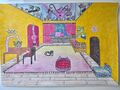
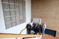
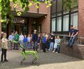
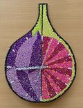
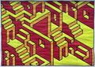
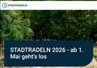
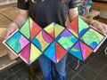

Bild des Monats im August

Maja Bohrmann (9F2, Brü) hat im letzten Schuljahr in der Zentralperspektive "Mein Zimmer im Jahr 2060" gestaltet.



Maja Bohrmann (9F2, Brü) hat im letzten Schuljahr in der Zentralperspektive "Mein Zimmer im Jahr 2060" gestaltet.

Die Fachgruppe Kunst verabschiedet sich mit einem Pop-Up Bild zur Hundertwasser Architektur in die Sommerferien. Das Bild stammt von Benno Adam aus der 5d (Swr).

„Komm mit auf eine wundersame Reise“ – so lautete das Thema des diesjährigen Literaturwettbewerbs. 44 junge Literaten haben dies zum Anlass genommen, uns auf eine Reise mitzunehmen, die facettenreicher kaum sein könnte.

Am 12.06. wurde die LoCoS Installation von Lothar Bührmann im Treppenhaus inoffiziell eingeweiht. Im Beisein der lokalen Presse, Vertretern des Fachbereichs Kunst und der Schulleitung konnte Frau Bührmann, die die Arbeit ihres verstorbenen Mannes dem Domgymnasium überlassen hatte, das fertige Wandobjekt bewundern.

Am 05.06. war für die Schülerinnen und Schüler der Technik-, Formel-Z- und Informatik-AG ein besonderes Highlight am Domgymnasium zu erleben.
Wetterbedingt fallen die Bundesjugendspiele in diesem Jahr aus. Der Unterricht am 12.06. findet somit nach Plan statt.

Herzliche Einladung zu den Sommerkonzerten und zum Sommerfest am 13.6.2026...
Der Schüler Kyrylo Syniavskyi, den viele von uns aus dem Ukraine-Projekt kennen, wendet sich an die Schulgemeinschaft unserer Schule.

Beim "Bild" des Monats im Juni handelt es sich um eine Uhr von Jasper Nicolaisen aus der 9L (Ser) zum Thema Design.
Auch in diesem Jahr findet mit Unterstützung der Deutschen UNESCO Kommission, des Auswärtigen Amtes und des Zentrums für Trauma- und Konfliktmanagement aus Köln das Ukraine Recreation-Projekt statt...

Bigband und Jazzdogs sind für das erste Sommerkonzert auf der Freilichtbühne in Holtebüttel zu Gast...
Am 29.05.2026 ab 20.00 Uhr sendet Deutschlandfunk Kultur den Mitschnitt des Eröffnungskonzertes vom 08.Mai 2026.
Mehr Infos gibt es auf der Homepage des DLF Kultur .
Die Theater-AG des Domgymnasium führt den "Meteor" von Dürrenmatt auf.

Das Bild des Monats im Mai stammt von Milena Rott aus der 8F2.
%20f%c3%bcr%20gef%c3%b6rderte%20Projekte-kzxm45v377paxy7.jpg)
Vor zwei Wochen durften wir unsere polnischen Austauschpartnerinnen und -partner aus Wrocław in Verden begrüßen.
Für Schülerinnen und Schüler der aktuellen 4. Klassen und deren Eltern, die am Tag der offenen Tür verhindert waren, bieten wir am am 22.4.2026 eine zusätzliche Schulführung an.
Der Treffpunkt ist um 17 Uhr am Eingang der Pestalozzischule auf dem Schulhof, Josephstraße 2.

Um an die guten Ergebnisse dert letzten Jahre anknüpfen zu können, müssen alle mitstrampeln... Hier geht es direkt zur Anmeldeseite

Für nähere Infos das Plakat anklicken!
Wie bereits angekündigt, werden die Nightingales (Leitung Vanessa Galli) und der Große Chor (Leitung Dietrich Steincke) am diesjährigen Benefizkonzert für Amnesty International teilnehmen.
Dazu laden wir herzlich ein.
Alle näheren Informationen können dem Plakat bitte entnommen werden.

Das Bild des Monats im April ist ein "Explosion Book" von Eevi Dannehl (6d) zum Thema: Figuren in abstrakter Landschaft.